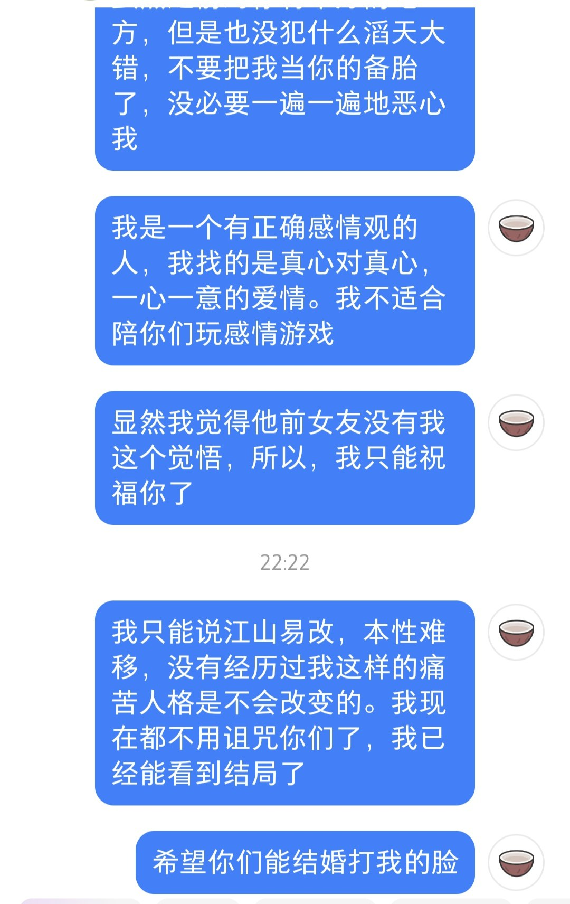

又是我人生中很重要的一天。
昨天晚上，她跟我说和他闹掰了，要做普通朋友。我出于心中对她的愧疚，潜意识的不舍，以及最后一丝对我们感情的不舍，选择了和她联系，问问她是什么情况。
凌晨一点，她说和他聊好了，我就立刻下楼打视频电话过去，问她发生了什么。她说，他们之间没有信任，她对他描绘的未来感觉十分平淡，他和前女友纠缠不清。我就借着机会表达我的最后一点真心，我说我放不下她，我改变了许多，我愿意给她创造一个更好的未来，营造更好的关系。她说难以立刻决定，要缓一缓，我只当她是需要一点空窗期。
当晚雷声大作，我的心中也汹涌澎湃。现在想来，要是真是这种念念不忘必有回响的剧情，怎会天雷滚滚？
今天白天我积极地向她互动示好，约她明天晚上吃饭，分享日常。晚上离开办公室走回宿舍，给她打了一路视频，嬉戏聊天，问她各种问题。最后到宿舍才发现，她在找我之后又找他挽回（打电话之前），我顿时无语了，我成备胎了。于是我告诉她明天必须给我答案，转念一想干嘛明天，我直接在支付宝找 ph，问他是什么态度，他要是还要追，我就退出。得到了肯定的答复，给她简短问询后，直接删微信。
然后我开始在小红书上私信她，是某种不带情绪的，客观的诅咒，然后写日记。其实两个回避型，我真不知道有没有一条世界线能让他们走到最后。一段关系中，有一个回避型都会给关系带来巨大灾难，两个回避型我真不敢想，一有矛盾各找各的前任，四个人有福了。所以其实也不是诅咒吧，我陈述了一条客观规律。

结果日记还没写完，她就打电话过来，我的诅咒生效了。她说他在犹豫，她把他删了，我一听霍，这不像你能干出来的事情啊，不得爱恨纠缠纷纷扰扰一辈子？她说她下定决心了，我跟她赌一顿饭，他还会来找她的。其实还想赌一顿，她会心软同意，但是没赌成。我觉得我赢定了哈哈哈。其实跟她放弃感情纠葛，一起聊天还是很开心的，毕竟是自己最熟悉的人，好多跟别人没法说的话都可以给她讲。
一切爱恨纠缠折磨，都至少暂时离我远去了。但现在凌晨了，我明天组会的 PPT 还没写完。